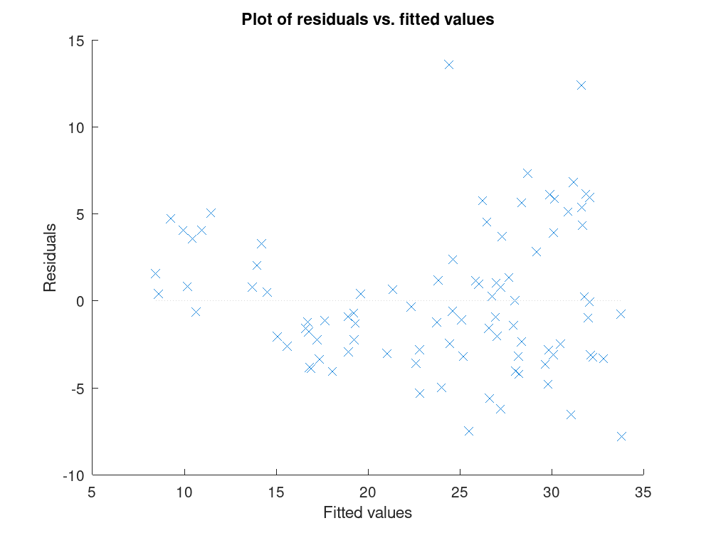
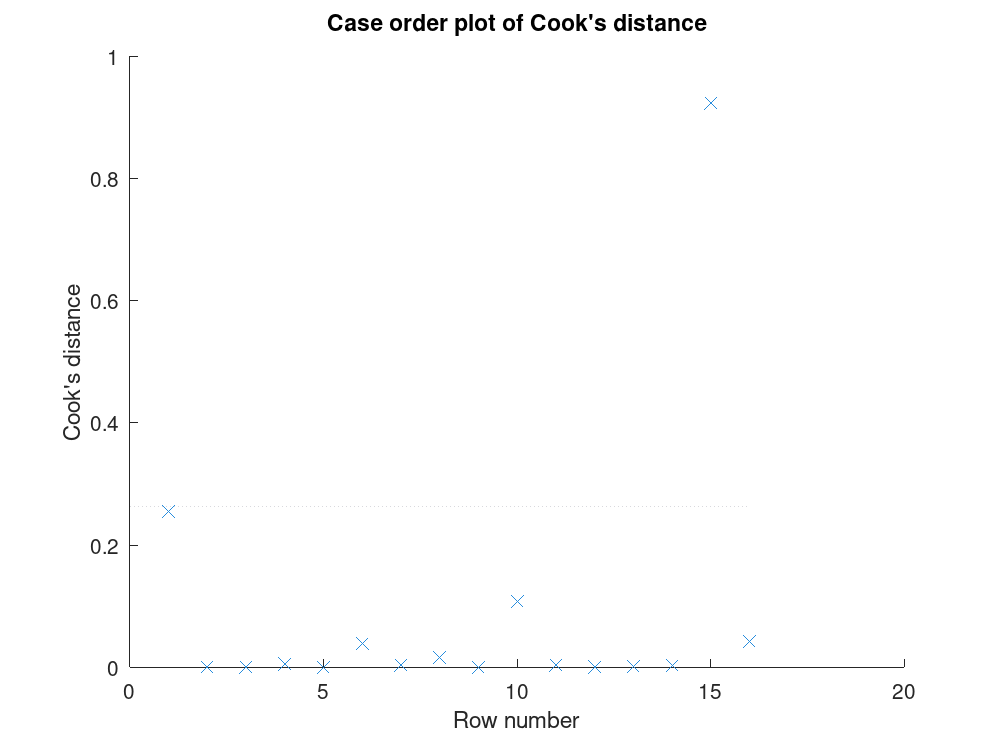
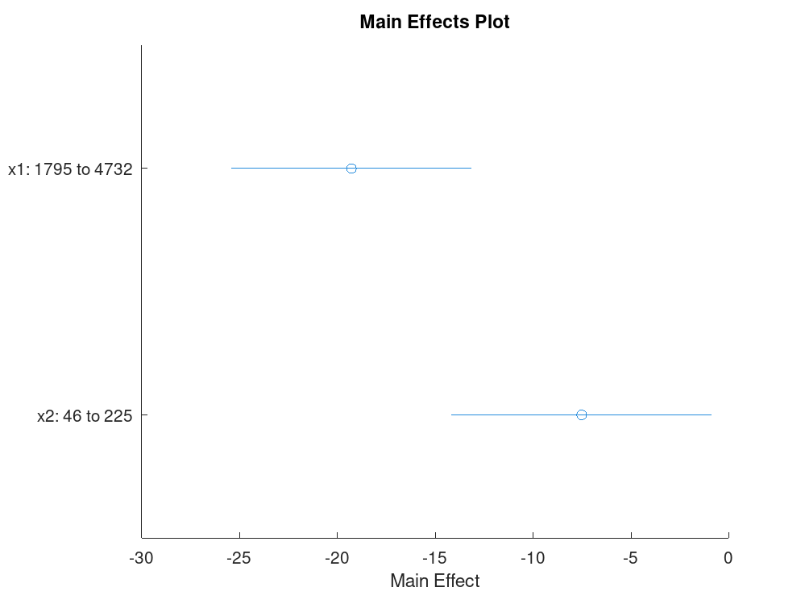

LinearModel
statistics: LinearModel
Linear regression model
The LinearModel class represents a least-squares (or, optionally,
robust) linear regression fit of a response variable to one or more
predictor variables. A LinearModel object is returned by the
fitlm function and holds everything about the fit in one place:
the fitted coefficients, the data and specification used to produce
them, and the diagnostics needed to assess the quality of the fit.
The properties of a LinearModel object fall into four groups:
| Group | Properties | |
|---|---|---|
| Coefficient estimates | Coefficients (a table of
estimates, standard errors, t-statistics, and p-values for each term),
CoefficientCovariance, CoefficientNames, and the
coefficient counts NumCoefficients and
NumEstimatedCoefficients. | |
| Summary statistics of the fit | DFE,
Fitted, Residuals (raw, Pearson, Studentized, and
standardized), Diagnostics (leverage, Cook’s distance, and other
per-observation influence measures), MSE, RMSE,
Rsquared (ordinary and adjusted), SSE, SSR,
SST, LogLikelihood, ModelCriterion (AIC, BIC, etc.),
and ModelFitVsNullModel (the F-test of the fitted model against an
intercept-only model). | |
| Fitting method information | Robust, which records
the weighting function and tuning constant used when the model is fit by
robust regression, and is empty for an ordinary least squares fit. | |
| Input data properties | Formula,
NumObservations, NumPredictors, NumVariables,
ObservationInfo (which observations were used, excluded, missing,
or weighted), ObservationNames, PredictorNames,
ResponseName, VariableInfo, VariableNames, and
Variables. |
A LinearModel object supports categorical predictors, which are
automatically encoded internally as indicator (dummy) variables,
observation weights for a weighted least squares fit, excluding specific
observations from the fit, and robust regression using iteratively
reweighted least squares. Once fitted, the following methods are
available on a LinearModel object:
| Method | Description | |
|---|---|---|
predict | Predict responses at new predictor values given in a matrix or table, or reproduce the training fitted values when called with no new data. Can also return pointwise or simultaneous confidence or prediction intervals alongside the point predictions. | |
feval | Predict responses given predictors as
separate scalar or vector arguments (one per predictor variable) instead
of a single matrix, so a LinearModel object can be evaluated the
same way as a plain function handle. Returns point predictions only. | |
random | Simulate new response values at new
predictor locations by adding independent Gaussian noise, drawn from the
estimated error variance MSE, to the fitted response. | |
coefCI | Return Wald confidence intervals for every fitted coefficient at a chosen significance level (default ). | |
coefTest | Test a linear hypothesis on the fitted coefficients. With no arguments, tests the overall model F-test that all non-intercept coefficients are zero; a custom hypothesis can be given as a contrast matrix and, if needed, right-hand-side values. Returns the p-value, and optionally the F-statistic and its numerator degrees of freedom. | |
dwtest | Durbin-Watson test for first-order autocorrelation among the model residuals, with a choice of exact or approximate p-value computation and a one- or two-sided alternative. | |
addTerms | Return a new, refitted LinearModel
with terms added to the current model specification, given as a
Wilkinson formula fragment or a terms matrix. Weights, excluded rows,
and categorical encodings carry over automatically; the original model
object is left unmodified. | |
removeTerms | Return a new, refitted
LinearModel with terms removed from the current model
specification, given as a Wilkinson formula fragment or a terms matrix.
Weights, excluded rows, and categorical encodings carry over
automatically; the original model object is left unmodified. | |
plotResiduals | Plot the model residuals. Default
is a probability density histogram; other supported plot types are
'fitted', 'caseorder', 'lagged',
'probability', and 'observed'. | |
plotDiagnostics | Plot per-observation influence
diagnostics. Default is leverage by observation row number; other
supported plot types are 'cookd', 'covratio',
'dfbetas', 'dffits', 's2_i', and
'contour' (standardized residuals against leverage with Cook’s
distance contours). | |
plotEffects | Plot the estimated main effect and 95% confidence interval of each predictor, evaluated between its observed minimum and maximum with all other predictors held at their observed means. | |
plotAdjustedResponse | Plot the fitted response against a single predictor, with the other predictors averaged out by averaging the fitted values over the observations used in the fit. | |
plotAdded | Plot the incremental effect of one or more terms on the response, after removing the effects of all other terms, along with the fitted line and its 95% confidence bounds. |
Create a LinearModel object by using the fitlm function or
the class constructor directly.
See also: fitlm
Source Code: LinearModel
The LinearModel class contains the following properties:
A -by- numeric matrix of covariance values for the
coefficient estimates, where is the number of coefficients in
the fitted model as given by NumCoefficients. This property is
read-only.
A cell array of character vectors, each containing the name of the
corresponding model term (e.g., '(Intercept)', 'x1',
'x1:x2'). This property is read-only.
A table with one row for each coefficient and four columns:
Estimate - estimated coefficient value
SE - standard error of the estimate
tStat - t-statistic for a two-sided test
pValue - p-value for the t-statistic
Coefficients that are dropped due to rank deficiency have
Estimate = 0, SE = 0, tStat = NaN,
pValue = NaN. This property is read-only.
A positive integer giving the total number of coefficients in the fitted model, including any coefficients set to zero because the model terms are rank deficient. This property is read-only.
A positive integer giving the number of coefficients actually estimated,
i.e., not set to zero due to rank deficiency.
NumEstimatedCoefficients equals the degrees of freedom for
regression. This property is read-only.
A positive integer equal to the number of observations minus the number
of estimated coefficients: DFE = NumObservations -
NumEstimatedCoefficients. This property is read-only.
A table with one row per observation and seven columns:
Leverage - diagonal of the hat matrix
CooksDistance - Cook’s distance, a measure of scaled
change in fitted values
Dffits - delete-1 scaled differences in fitted values
S2_i - delete-1 residual variance estimate
CovRatio - ratio of the determinant of the coefficient
covariance matrix with and without each observation
Dfbetas - -by- matrix of scaled changes
in coefficient estimates when each observation is deleted in turn
HatMatrix - -by- projection matrix such
that Fitted = HatMatrix * y
Rows not used in fitting have NaN in CooksDistance,
Dffits, S2_i, and CovRatio, and zeros in
Leverage, Dfbetas, and HatMatrix. This property
is read-only.
An -by-1 numeric vector of predicted response values based on
the training data, where is the total number of observations
including excluded and missing rows, which contain NaN. Use
predict to obtain predictions for new data or to compute
confidence bounds. This property is read-only.
A scalar numeric value equal to the log-likelihood of the response values, assuming each response is normally distributed with mean equal to the fitted value and variance equal to (the MLE variance estimate). This property is read-only.
A structure with four fields:
AIC - Akaike information criterion:
AICc - AIC corrected for sample size:
BIC - Bayesian information criterion:
CAIC - Consistent AIC:
Here is LogLikelihood, is
NumEstimatedCoefficients, and is
NumObservations. This property is read-only.
A structure with three fields:
Fstat - F-statistic of the fitted model versus a null
model containing only a constant term
Pvalue - p-value for the F-statistic
NullModel - character vector describing the null model
This property is read-only.
A scalar numeric value equal to , where SSE is
the sum of squared errors and DFE is the degrees of freedom for
error. This property is read-only.
A table with one row per observation and four columns:
Raw - observed minus fitted values
Pearson - raw residuals divided by RMSE
Standardized - internally studentized residuals; raw
residuals divided by their estimated standard deviation using the
full-model MSE
Studentized - externally studentized residuals; each raw
residual divided by an estimate of the standard deviation based on
all observations except that one, using the delete-1 S2_i
Rows not used in the fit contain NaN. This property is
read-only.
A scalar numeric value equal to . This property is read-only.
A structure with two fields:
Ordinary - coefficient of determination:
Adjusted - adjusted that accounts for the
number of coefficients in the model
This property is read-only.
A scalar numeric value equal to the sum of squared residuals. For a model with an intercept, . For weighted fits, this is the weighted sum of squares. This property is read-only.
A scalar numeric value equal to the sum of squared deviations of the fitted values from the mean of the response. For a model with an intercept, . For weighted fits, this is the weighted sum of squares. This property is read-only.
A scalar numeric value equal to the sum of squared deviations of the response from its mean. For a model with an intercept, . For a robust fit, rather than the deviation from the mean. For weighted fits, this is the weighted sum of squares. This property is read-only.
A structure with three fields:
WgtFun - robust weighting function name, e.g.
'bisquare'
Tune - tuning constant; empty if WgtFun is
'ols' or a function handle with the default tuning constant
Weights - vector of final iteration weights; empty for
a CompactLinearModel object
This structure is empty unless the model was fit using robust regression. This property is read-only.
A structure with seven fields:
Start - formula string of the starting model
Lower - formula string of the lower-bound model; terms
listed here cannot be removed
Upper - formula string of the upper-bound model; the
model cannot grow beyond this
Criterion - criterion used, e.g. 'sse'
PEnter - threshold for adding a term
PRemove - threshold for removing a term
History - table with one row per step and columns
Action, TermName, Terms, DF,
delDF, FStat, PValue
This structure is empty unless the model was fit using stepwise regression. This property is read-only.
A structure representing the model formula with fields including
ResponseName, LinearPredictor, PredictorNames,
TermNames, HasIntercept, Terms (the terms
matrix), and InModel. This property is read-only.
A positive integer giving the number of observations actually used in
fitting. Rows with missing values and rows excluded via the
'Exclude' name-value argument are not counted. This property
is read-only.
A positive integer giving the number of predictor variables used to fit the model. This property is read-only.
A positive integer giving the total number of variables in the input data, counting predictors, the response, and any unused columns. This property is read-only.
An -by-4 table where is the total number of rows in the input data. The four columns are:
Weights - observation weight, default is 1
Excluded - logical; true if excluded via the
'Exclude' argument
Missing - logical; true if the row contains any
NaN value
Subset - logical; true if the observation was used in
the fit, i.e. not excluded and not missing
This property is read-only.
A cell array of character vectors containing the names of the observations. If the fit was based on a table that has row names, this property holds those names. Otherwise it is an empty cell array. This property is read-only.
A cell array of character vectors containing the names of the predictor variables used to fit the model. This property is read-only.
A character vector containing the name of the response variable. This property is read-only.
A table with one row per variable including any unused variables, and four columns:
Class - variable class as a character vector, e.g.
'double' or 'categorical'
Range - for continuous variables, a two-element vector
[min, max]; for categorical variables, a vector of the
distinct values
InModel - logical; true if the variable is in the
fitted model
IsCategorical - logical; true if the variable is
categorical
This property is read-only.
A cell array of character vectors containing the names of all
variables, including predictors, the response, and unused variables.
For table input these are the table column names. For matrix input
these are the values given by 'VarNames', defaulting to
{'x1','x2',...,'xp','y'}. This property is read-only.
A table containing predictor and response values for all observations, including unused variables. For table input this is the full input table. For matrix input this is a table constructed from the predictor matrix and response vector. This property is read-only.
The LinearModel class offers the following public methods:
LinearModel: mdl = LinearModel (X, y)
LinearModel: mdl = LinearModel (tbl, resp_input)
LinearModel: mdl = LinearModel (…, modelspec)
LinearModel: mdl = LinearModel (…, Name, Value, …)
mdl = LinearModel (X, y) returns a
LinearModel object fit to the response y and the
predictor data X. Unless removed via the 'Intercept'
option, the fitted model contains a constant (intercept) term and one
linear term for every column of X.
'x1',
'x2', …, 'xP'.
'y'.
mdl = LinearModel (tbl, resp_input) fits a
model using the variables in the table (or dataset) tbl as
predictors. resp_input selects the response and can be a
character vector naming a variable in tbl, or a numeric vector
the same height as tbl to use as an external response. If
resp_input is left empty, the last variable in tbl is used
as the response. Variables that are categorical arrays, cell
arrays of character vectors, or logical arrays are automatically
treated as categorical predictors.
mdl = LinearModel (…, modelspec) additionally
specifies the terms of the model to fit. modelspec can be any of
the following.
| Value | Description | |
|---|---|---|
'constant' | Model contains only an intercept term. | |
'linear' | Model contains an intercept and one term for each predictor variable. This is the default when modelspec is not specified. | |
'interactions' | Model contains an intercept, all linear terms, and all pairwise products of distinct predictor variables (no squared terms). | |
'purequadratic' | Model contains an intercept, all linear terms, and all squared terms. | |
'quadratic' | Model contains an intercept, all linear terms, all pairwise products of distinct predictor variables, and all squared terms. | |
'full' | Model contains an intercept and all terms up to and including the full -way interaction of the predictor variables. | |
| terms matrix | A or numeric matrix, where is the number of terms and is the number of predictor variables. Each row represents one term, and the value in column is the exponent to which predictor is raised in that term; a row of all zeros represents the intercept. If a matrix is supplied, its last column (representing the response variable) must be all zeros. | |
| Wilkinson formula | A character vector of the form
'y ~ terms' describing the response and predictor terms using
Wilkinson notation. For table input, the variable to the left of
'~' is used as the response, overriding resp_input. |
mdl = LinearModel (…, Name, Value,
…) specifies additional options using one or more
Name-Value pair arguments as described below.
| Name | Value | |
|---|---|---|
'Intercept' | A logical scalar indicating
whether to include a constant (intercept) term in the model. Default
is true. Ignored when modelspec is a Wilkinson formula. | |
'Weights' | A numeric vector of nonnegative observation weights, with one element per observation, used to fit a weighted least squares model. Default is a vector of ones. | |
'Exclude' | A numeric or logical vector
specifying observations to exclude from the fit, given as row indices
or a logical mask. Excluded observations, together with any
observation containing a missing value, are recorded in
ObservationInfo but do not contribute to the fit. | |
'CategoricalVars' | Specifies which predictor variables are treated as categorical, given as a vector of column indices, a logical vector, or a cell array of variable names. Each categorical predictor with categories is expanded into indicator (dummy) variables, using the first category as the reference level. | |
'VarNames' | A cell array of character vectors naming the predictor and response variables, in order, with the response variable name last. Only applies to matrix input, since table variables already carry their own names. | |
'ResponseVar' | A character vector naming the response variable, used to override the response variable name that would otherwise be used. | |
'PredictorVars' | A cell array of character vectors naming which variables in tbl to use as predictors. By default, all variables other than the response variable are used. | |
'RobustOpts' | Selects ordinary least squares or
robust regression fitting. This value can be 'off' (default,
ordinary least squares), 'on' (robust fitting using the
'bisquare' weighting function), the name of one of the
weighting functions below, a function handle for a custom weighting
function, or a scalar structure with fields RobustWgtFun and
Tune specifying the weighting function and its tuning
constant. Robust fitting uses Iteratively Reweighted Least Squares
(IRLS), refitting the model with updated observation weights until the
coefficients converge. Supported weighting function names:
'andrews', 'bisquare', 'cauchy',
'fair', 'huber', 'logistic', 'ols',
'talwar', 'welsch', each with its own default tuning
constant. |
mdl is returned as a LinearModel object. If
'RobustOpts' is anything other than 'off', the returned
model is a robust fit rather than an ordinary least squares fit.
LinearModel: ypred = predict (mdl, Xnew)
LinearModel: ypred = predict (mdl)
LinearModel: [ypred, yci] = predict (mdl, Xnew)
LinearModel: [ypred, yci] = predict (mdl, Xnew, Name, Value)
ypred = predict (mdl, Xnew) returns the fitted
response values at the new predictor locations in Xnew. Xnew
can be a numeric matrix with one column per predictor in the same order
as the training data, or a table whose column names match
mdl.PredictorNames. Rows containing NaN are returned
as NaN without error.
ypred = predict (mdl) omits Xnew and returns
fitted values for the original training observations in their original
row order. Rows that were excluded or contained missing values are
returned as NaN. The result is identical to
mdl.Fitted.
[ypred, yci] = predict (…) also returns
yci, an -by-2 matrix of confidence bounds where column 1 is
the lower bound and column 2 is the upper bound. By default these are
95% pointwise confidence intervals on the mean response.
Name-Value pair arguments:
| Name | Value | |
|---|---|---|
'Alpha' | Significance level for the confidence
interval, specified as a scalar in . The interval has
coverage . Default is 0.05, giving a 95%
interval. | |
'Prediction' | Type of interval to compute.
"curve" (default) gives a confidence interval on the mean response
. "observation" gives a wider prediction interval for
a single future observation , which accounts
for both estimation uncertainty and irreducible noise; it adds
mdl.MSE to the variance before computing the half-width. | |
'Simultaneous' | Logical flag controlling whether
the bounds are simultaneous or pointwise. When true,
Scheff'{e}’s method is used so the entire predicted curve lies within
the band with confidence; these bands are always
wider than pointwise ones. Default is false. |
LinearModel: ysim = random (mdl, Xnew)
ysim = random (mdl, Xnew) computes the fitted
response at each row of Xnew and then adds independent Gaussian
noise to each value. The noise is drawn from where
is the estimated error variance mdl.MSE
(mean squared error of the fit). The result is a column vector of the
same length as the number of rows in Xnew.
Xnew is required and must be non-empty. It can be a numeric
matrix with one column per predictor in the same order as the training
data, or a table whose column names match
mdl.PredictorNames. Unlike predict, there is no
no-argument form; the predictor locations must always be supplied
explicitly.
Because the added noise is drawn freshly on every call, two calls with
the same Xnew will generally produce different output. To get
reproducible results, set the random seed with rand ('state', s)
before calling random.
For deterministic predictions without noise, use predict or
feval. predict also provides confidence intervals on the
mean response.
LinearModel: ypred = feval (mdl, X)
LinearModel: ypred = feval (mdl, x1, x2, …, xp)
ypred = feval (mdl, X) accepts a single
numeric matrix X with one column per predictor in the same order
as the training data, or a table whose column names match
mdl.PredictorNames. The output is an -by-1 column
vector. Rows that contain NaN in any predictor column are
returned as NaN.
ypred = feval (mdl, x1, x2, …,
xp) accepts exactly mdl.NumPredictors separate
arguments, one per predictor variable. All non-scalar arguments must
have the same size; a scalar argument is broadcast to that size
automatically. The output shape follows the shape of the non-scalar
inputs: column vector inputs give a column vector output, row vector
inputs give a row vector output, and all-scalar inputs give a scalar.
This form is convenient when predictor data is already stored in separate
vectors rather than a combined matrix.
feval gives the same numerical predictions as predict but
does not support confidence intervals. Use predict when you also
need bounds on the response. Because a LinearModel object behaves
like a function through feval, it can be passed directly to
routines that accept a function handle, such as fminsearch or
integral.
LinearModel: ci = coefCI (mdl)
LinearModel: ci = coefCI (mdl, alpha)
ci = coefCI (mdl) returns 95% confidence intervals
for every coefficient in mdl using a default significance level of
0.05.
ci = coefCI (mdl, alpha) uses the significance
level alpha, a scalar in . The resulting intervals
have coverage . Setting alpha to 0
produces intervals of infinite width; setting it to 1 collapses
each interval to the corresponding point estimate.
The output ci is a -by-2 numeric matrix where
mdl.NumCoefficients. Row contains
the interval for the -th coefficient, whose name is stored in
mdl.CoefficientNames{j}. Column 1 is the lower bound and
column 2 is the upper bound. The midpoint of each interval equals the
corresponding point estimate in mdl.Coefficients.Estimate.
Intervals use the Wald method:
,
where is the coefficient estimate, is
its standard error from mdl.Coefficients.SE, and the
critical value is the quantile of the
-distribution with mdl.DFE degrees of freedom.
In rank-deficient models, aliased coefficients have
and their row in ci is [0, 0].
LinearModel: p = coefTest (mdl)
LinearModel: p = coefTest (mdl, H)
LinearModel: p = coefTest (mdl, H, C)
LinearModel: [p, F] = coefTest (…)
LinearModel: [p, F, r] = coefTest (…)
coefTest tests whether one or more linear combinations of the
fitted coefficients equal specified constants. Each linear combination
is encoded as a row of the contrast matrix H, and the right-hand
side is given by C.
p = coefTest (mdl) performs the overall model F-test:
it tests the joint null hypothesis that every coefficient except the
intercept is zero. The returned p-value matches the F-statistic line
printed at the bottom of the model display.
p = coefTest (mdl, H) tests the null hypothesis
, where is the full coefficient vector
of length mdl.NumCoefficients. H must be
a full-rank numeric matrix with columns; each row specifies one
linear constraint. To test a single coefficient, use a row vector with a
1 in that coefficient’s position and zeros elsewhere; the
resulting F-statistic equals the square of the corresponding t-statistic
in mdl.Coefficients. To test a categorical predictor that
expands to multiple indicator columns, include one row per indicator in
H.
p = coefTest (mdl, H, C) tests
instead of zero. C must be a numeric vector
with the same number of elements as rows of H; both row and column
vectors are accepted.
The second output F is the value of the F-statistic:
, where is
mdl.CoefficientCovariance and is the number of
rows of H. The third output r is that numerator degrees of
freedom; the denominator degrees of freedom is mdl.DFE.
Under the null hypothesis follows an
distribution and the p-value is the upper-tail probability. When
H is rank-deficient but contains no NaN, both p and
F are returned as NaN without an error.
LinearModel: p = dwtest (mdl)
LinearModel: p = dwtest (mdl, method)
LinearModel: p = dwtest (mdl, method, tail)
LinearModel: [p, DW] = dwtest (…)
dwtest checks whether the raw residuals of mdl are
correlated with their immediate neighbours in observation order, which
would violate the independence assumption of ordinary least squares.
The null hypothesis is that there is no autocorrelation. A small
p-value gives evidence against this and suggests that the residuals are
not independent. This test is most meaningful when the observations
have a natural ordering, such as a time series.
The test is based on the Durbin-Watson statistic , where are the raw residuals of the active (non-excluded) observations. The statistic always lies in : values near indicate no autocorrelation, values well below indicate positive autocorrelation (adjacent residuals tend to have the same sign), and values well above indicate negative autocorrelation (adjacent residuals tend to alternate in sign).
method controls how the p-value is computed and defaults to
'exact'. 'exact' uses the eigenvalues of the
projected differencing matrix together with Imhof’s numerical
integration to obtain a precise p-value; this is slower but accurate
for any sample size. 'approximate' uses a normal approximation
based on the first two moments of the DW distribution under the null;
this is faster and adequate for large samples but less reliable for
small ones. The argument is case-insensitive.
tail selects the alternative hypothesis and defaults to
'both'. 'right' tests for positive autocorrelation
(), 'left' tests for negative autocorrelation
(), and 'both' tests for autocorrelation in
either direction. The one-sided p-values always satisfy
, and the two-sided
p-value equals .
The second output DW is the value of the Durbin-Watson statistic itself; it does not depend on method or tail.
LinearModel: NewMdl = addTerms (mdl, terms)
addTerms returns a new LinearModel refitted on the same
data and settings as mdl with the specified terms appended
to the model formula. The original model mdl is never modified;
all settings including observation weights, excluded rows, and
categorical variable encodings are carried over automatically. To
update a model in place, reassign the result:
mdl = addTerms (mdl, terms).
terms may be a character vector in Wilkinson notation. Use
'x1' for a main effect, 'x1:x2' for a two-way
interaction, 'x1*x2' to add both main effects and their
interaction in one step, 'x1 + x2^2' to add several terms at
once, or '1' to add an intercept to a no-intercept model. A
bare power term 'x1^2' adds x1 together with
x1^2 (and any intermediate powers), matching the Wilkinson
hierarchy convention; power notation used inside an interaction, e.g.
'x1:x2^2', adds only that exact interaction term. All
variable names must match entries in mdl.PredictorNames.
terms may also be a numeric matrix of size t-by-v,
where t is the number of terms to add and v equals
mdl.NumVariables. Entry T(i,j) is the exponent of
variable j in term i. For example, in a model with
variables x1, x2, y: [0 0 0] is the
intercept, [0 1 0] is x2, [1 1 0] is
x1:x2, and [2 0 0] is x1^2. The last column
(response) is always zero. A matrix with mdl.NumPredictors
columns is also accepted and is automatically padded with a trailing
zero column for the response.
Terms that are already present in mdl are silently skipped. If
every specified term already exists, a warning is issued and mdl
is returned unchanged. For a categorical predictor, addTerms
adds the full group of indicator variables for that predictor in one
step rather than adding individual indicator columns.
LinearModel: NewMdl = removeTerms (mdl, terms)
removeTerms returns a new LinearModel refitted on the same
data and settings as mdl, but with the specified terms
dropped from the model formula. The original model mdl is never
modified; all settings including observation weights, excluded rows, and
categorical variable encodings are carried over automatically. To
update a model in place, reassign the result:
mdl = removeTerms (mdl, terms).
terms may be a character vector in Wilkinson notation. Use
'x2' to remove a main effect, 'x1:x2' to remove an
interaction, '1' to remove the intercept, or 'x1 + x2^2'
to remove several terms at once. A bare power term 'x1^2'
removes x1 together with x1^2 (and any intermediate
powers), matching the Wilkinson hierarchy convention; power notation
used inside an interaction, e.g. 'x1:x2^2', removes only that
exact interaction term. The star operator 'x1*x2' removes the
main effects x1 and x2 together with their interaction
x1:x2 in a single call, following the same expansion rule as
addTerms. All variable names must match entries in
mdl.PredictorNames.
terms may also be a numeric matrix of size t-by-v,
where t is the number of terms to remove and v equals
mdl.NumVariables. Entry T(i,j) is the exponent of
variable j in term i. For example, in a model with
variables x1, x2, y: [0 0 0] is the
intercept, [0 1 0] is x2, [1 1 0] is
x1:x2, and [2 0 0] is x1^2. A matrix with
mdl.NumPredictors columns is also accepted and is
automatically padded with a trailing zero column for the response.
Terms specified but absent from mdl are silently skipped. A
warning is issued and mdl is returned unchanged only when every
single specified term is absent from the model. For a categorical
predictor, removeTerms removes the full group of indicator
variables for that predictor in one step.
LinearModel: plotResiduals (mdl)
LinearModel: plotResiduals (mdl, plottype)
LinearModel: plotResiduals (mdl, plottype, Name, Value)
LinearModel: plotResiduals (ax, …)
LinearModel: h = plotResiduals (…)
plotResiduals (mdl) creates a probability density histogram
of the raw residuals. Bin width follows Scott’s rule
and is rounded to a visually clean
value. The bar areas sum to 1.
plotResiduals (mdl, plottype) creates the type of
residual plot given by plottype. For all types except
"histogram" and "probability", the full observation vector
including excluded rows is passed to the plot. Excluded or missing rows
appear as NaN in the plotted data and produce visible gaps.
plottype must be one of:
'histogram' (default)patch handle. Accepts FaceColor,
EdgeColor, FaceAlpha, and LineWidth Name-Value
arguments.'fitted'h(1) is the data scatter and h(2) is the reference line.'caseorder'n_total. A dotted horizontal
reference line marks . Returns two line handles:
h(1) is the data and h(2) is the reference line.'lagged'h(1)
is the scatter, h(2) is the horizontal reference, and h(3)
is the vertical reference.'probability'normplot. Returns two handles: h(1) is the data line and
h(2) is the fitted reference line produced by normplot.
Name-Value arguments are not applied for this plot type.'observed'h(1) is the scatter, h(2) is the
reference, and h(3) is the vertical segment line
(stored as a single NaN-separated line object).'symmetry'(x, y) satisfies
and
, using the
most extreme observations on each side. A
perfectly symmetric distribution falls on the dotted
reference line. Returns two handles: h(1) is the scatter and
h(2) is the reference line. plotResiduals (ax, …) targets the axes object ax
instead of the current axes returned by gca.
h = plotResiduals (…) returns a vector of graphics
handles. The number of handles depends on plottype as described
above. Name-Value arguments are applied to the data handle h(1)
only. Reference lines are always drawn with the default style and are
not affected by Name-Value arguments.
The following Name-Value arguments are accepted. Arguments marked
histogram only are passed directly to the patch object and
have no effect on other plot types. Arguments marked
non-histogram are applied to the scatter marker and have no
effect on the histogram.
| Name | Description and default | |
|---|---|---|
'ResidualType' | Type of residual to plot. One of 'raw' (default),
'pearson', 'standardized', or 'studentized'.
Case-insensitive. Selects the corresponding column of
mdl.Residuals. | |
'Color' | (non-histogram) Marker color.
Default: [0.1490 0.5490 0.8660]. | |
'Marker' | (non-histogram) Marker symbol. Any symbol accepted by
plot is valid. Default: 'x'. | |
'MarkerSize' | (non-histogram) Marker size in points. Default: 6. | |
'MarkerEdgeColor' | (non-histogram) Marker edge color. Default: 'auto'. | |
'MarkerFaceColor' | (non-histogram) Marker fill color. Default: 'none'. | |
'LineWidth' | (non-histogram) Width of the marker edge in points.
Default: 0.5. | |
'FaceColor' | (histogram only) Fill color of the histogram bars.
Default: [0.1490 0.5490 0.8660]. | |
'EdgeColor' | (histogram only) Edge color of the histogram bars. | |
'FaceAlpha' | (histogram only) Transparency of the histogram bars, specified as a scalar in . |
LinearModel: plotDiagnostics (mdl)
LinearModel: plotDiagnostics (mdl, plottype)
LinearModel: plotDiagnostics (mdl, plottype, Name, Value)
LinearModel: plotDiagnostics (ax, …)
LinearModel: h = plotDiagnostics (…)
plotDiagnostics (mdl) creates a case-order plot of the
leverage of each observation. The x-axis is the observation row number
running from 1 to the total number of rows including any excluded rows.
A dotted horizontal reference line marks the recommended threshold
, where is mdl.NumCoefficients and
is mdl.NumObservations.
plotDiagnostics (mdl, plottype) creates the diagnostic
plot specified by plottype. For all types except "contour",
the x-axis is the row number and covers all rows including excluded ones.
Excluded rows produce NaN values in the diagnostic vectors, which
appear as natural gaps in the plot with no special handling required.
plottype must be one of:
'leverage' (default)mdl.Diagnostics.Leverage).
One dotted horizontal reference line at .
Returns two handles: h(1) is the data scatter and h(2)
is the reference line.'cookd'mdl.Diagnostics.CooksDistance). One dotted reference line at
, where the mean ignores
NaN values. Returns two handles: h(1) data, h(2)
reference.'covratio'mdl.Diagnostics.CovRatio). Two dotted reference lines at
(lower bound) and (upper bound).
Both bounds are stored as a single NaN-separated line object.
Returns two handles: h(1) data, h(2) combined reference.'dfbetas'mdl.Diagnostics.Dfbetas, one column per coefficient).
One line object is drawn per coefficient. Two dotted reference lines
at are stored as a single NaN-separated
line object. Returns handles: h(1) through
h(p) are the per-coefficient data lines and h(p+1) is
the combined reference. Name-Value arguments are applied to all
data handles.'dffits'mdl.Diagnostics.Dffits). Two dotted reference lines at
stored as a single NaN-separated line.
Returns two handles: h(1) data, h(2) combined reference.'s2_i'mdl.Diagnostics.S2_i). One dotted
reference line at mdl.MSE. Returns two handles: h(1)
data, h(2) reference.'contour'h(1) is the data scatter
(a line object) and h(2) is the contour object. plotDiagnostics (ax, …) targets the axes object
ax instead of the current axes returned by gca.
h = plotDiagnostics (…) returns a vector of graphics
handles. The number of handles depends on plottype as described
above. Name-Value arguments are applied to the data handle h(1),
except for "dfbetas" where they are applied to all
coefficient handles. Reference line handles are never affected by
Name-Value arguments.
| Name | Description and default | |
|---|---|---|
'Color' | Marker color for data points. For "dfbetas" this color is
applied to all coefficient line objects.
Default: [0.1490 0.5490 0.8660]. | |
'Marker' | Marker symbol. Any symbol accepted by plot is valid.
Default: 'x'. | |
'MarkerSize' | Marker size in points. Default: 6. | |
'MarkerEdgeColor' | Marker edge color. Default: 'auto'. | |
'MarkerFaceColor' | Marker fill color. Default: 'none'. | |
'LineWidth' | Width of the marker edge in points. Default: 0.5. |
LinearModel: plotEffects (mdl)
LinearModel: plotEffects (ax, mdl)
LinearModel: h = plotEffects (…)
plotEffects (mdl) creates a horizontal dot-and-line plot
with one row per predictor. Each dot shows the estimated main effect on
the response from changing that predictor from its minimum observed value
to its maximum observed value, while holding all other predictors fixed
at their observed means. A horizontal line through each dot shows the
95% confidence interval for that effect.
The main effect for predictor xs is defined as , where the adjusted response function evaluates the model at the specified value of xs with all other predictors set to their observed means. For numeric predictors the sign of the effect can be positive or negative depending on the direction of the relationship.
plotEffects (ax, mdl) creates the plot in the axes
object ax instead of the current axes returned by gca.
h = plotEffects (…) returns a vector of
graphics handles where is the number of predictors.
h(1) is the line object containing the effect estimate markers
(one circle per predictor, plotted as a single line object with
XData of length and YData = 1:p).
h(j+1) is the confidence interval line for predictor ,
with XData = [ci_lo, ci_hi] and YData = [j, j].
The y-axis tick labels follow the format
'varname: min to max', showing the predictor name and the
minimum and maximum observed values used to compute the effect.
LinearModel: plotAdjustedResponse (mdl, var)
LinearModel: plotAdjustedResponse (mdl, var, Name, Value)
LinearModel: plotAdjustedResponse (ax, …)
LinearModel: h = plotAdjustedResponse (…)
plotAdjustedResponse (mdl, var) creates an adjusted
response plot for the predictor var in the linear regression
model mdl. var is a character vector or string naming a
predictor in mdl.PredictorNames, or a positive integer indexing
into mdl.VariableNames.
An adjusted response function describes the fitted response as a function of a single predictor, with the other predictors averaged out by averaging the fitted values over the observations used in the fit. For a model , the adjusted response function for is , where is the number of observations used to fit the model. The adjusted response data value for observation is .
For a numeric predictor, the adjusted response function is evaluated on an evenly spaced grid of 100 points spanning the minimum to the maximum observed value of var. For a categorical predictor, the adjusted response function is evaluated at each category level.
Excluded or missing observations appear as NaN in the adjusted
data and produce gaps in the plotted data points.
plotAdjustedResponse (mdl, var, Name,
Value) specifies additional Name-Value arguments applied to the
adjusted data points (h(1)). The following are accepted:
| Name | Description and default | |
|---|---|---|
'Color' | Marker color. Default: [0.1490 0.5490 0.8660]. | |
'Marker' | Marker symbol. Default: 'x'. | |
'MarkerSize' | Marker size in points. Default: 6. | |
'MarkerEdgeColor' | Marker edge color. Default: 'auto'. | |
'MarkerFaceColor' | Marker fill color. Default: 'none'. | |
'LineWidth' | Width of the marker edge in points. Default: 0.5. |
plotAdjustedResponse (ax, …) plots into the axes
object ax instead of the current axes returned by gca.
h = plotAdjustedResponse (…) returns a 2-by-1
vector of line handles. h(1) corresponds to the adjusted
response data points and h(2) corresponds to the adjusted
response function. Name-Value arguments only affect h(1).
LinearModel: plotAdded (mdl)
LinearModel: plotAdded (mdl, coef)
LinearModel: plotAdded (mdl, coef, Name, Value)
LinearModel: plotAdded (ax, …)
LinearModel: h = plotAdded (…)
plotAdded (mdl) creates an added variable plot for the
whole model mdl except the constant (intercept) term.
plotAdded (mdl, coef) creates an added variable
plot for the coefficients specified by coef. coef is a
character vector or string naming a single coefficient in
mdl.CoefficientNames, the name of a categorical predictor in
mdl.PredictorNames (which selects that predictor’s whole group
of indicator coefficients), or a vector of positive integers indexing
into mdl.CoefficientNames.
An added variable plot, also known as a partial regression leverage plot, illustrates the incremental effect on the response of the selected terms after removing the effects of all other terms. For a single selected predictor , the response and are each fit to all other terms: , . The adjusted values are and . When coef selects more than one coefficient, the selected columns of the design matrix are combined into a single direction using the unit vector , and the added variable plot is created for that combined direction.
Excluded or missing observations appear as NaN in the adjusted
data and produce gaps in the plotted data points.
plotAdded (mdl, coef, Name, Value)
specifies additional Name-Value arguments applied to the adjusted data
points (h(1)). The following are accepted:
| Name | Description and default | |
|---|---|---|
'Color' | Marker color. Default: [0.1490 0.5490 0.8660]. | |
'Marker' | Marker symbol. Default: 'x'. | |
'MarkerSize' | Marker size in points. Default: 6. | |
'MarkerEdgeColor' | Marker edge color. Default: 'auto'. | |
'MarkerFaceColor' | Marker fill color. Default: 'none'. | |
'LineWidth' | Width of the marker edge in points. Default: 0.5. |
plotAdded (ax, …) plots into the axes object
ax instead of the current axes returned by gca.
h = plotAdded (…) returns a 3-by-1 vector of line
handles. h(1), h(2), and h(3) correspond to the
adjusted data points, the fitted line, and the 95% confidence bounds
of the fitted line, respectively. Name-Value arguments only affect
h(1).
Distance = [10; 15; 20; 25; 30; 35; 40; 45; 50; 55]; Time = [58; 55; 52; 50; 47; 45; 43; 41; 40; 38]; X = Distance; y = Time;
Fit the model and inspect the estimated slope and intercept.
mdl = fitlm (X, y)
mdl =
Linear regression model:
y ~ 1 + x1
Coefficients:
2x4 table
Estimate SE tStat pValue
________ _________ ________ ___________
(Intercept) 61.2 0.654588 93.494 1.91213e-13
x1 -0.44 0.0184226 -23.8836 1.00609e-08
Number of observations: 10, Error degrees of freedom: 8
Root Mean Squared Error: 0.83666
R-squared: 0.986169, Adjusted R-Squared: 0.984441
F-statistic vs. constant model: 570.429, p-value = 1.00609e-08
Predict the finish time for a runner training 32 km per week.
ypred = predict (mdl, 32)
ypred = 47.120
Traffic = [120; 150; 90; 200; 175; 60; 220; 140; 100; 190; 80; 210; 130];
MenuSize = [8; 12; 6; 15; 10; 5; 18; 9; 7; 14; 6; 16; 11];
Revenue = [1450; 1820; 1010; 2400; 2050; 700; 2650; 1700; 1150; ...
2300; 900; 2500; 1600];
X = [Traffic, MenuSize];
y = Revenue;
Fit the model with both predictors together.
mdl = fitlm (X, y)
mdl =
Linear regression model:
y ~ 1 + x1 + x2
Coefficients:
3x4 table
Estimate SE tStat pValue
________ ________ ________ ___________
(Intercept) -47.0932 27.3456 -1.72215 0.115771
x1 11.4079 0.616078 18.517 4.55169e-09
x2 11.4344 7.68384 1.48811 0.167562
Number of observations: 13, Error degrees of freedom: 10
Root Mean Squared Error: 32.4551
R-squared: 0.997901, Adjusted R-Squared: 0.997482
F-statistic vs. constant model: 2377.53, p-value = 4.07061e-14
Check how tight the 95% confidence interval is on each coefficient.
ci = coefCI (mdl)
ci =
-108.0231 13.8366
10.0352 12.7806
-5.6862 28.5551
load carsmall X = [Weight, Horsepower]; y = MPG;
Fit the additive model first.
mdl = fitlm (X, y);
Add the interaction between weight and horsepower.
mdl2 = addTerms (mdl, 'x1:x2');
Compare predictions from both models for the same new car.
Xnew = [3200, 120]; ypred1 = predict (mdl, Xnew)
ypred1 = 21.719
ypred2 = predict (mdl2, Xnew)
ypred2 = 20.416
load hald X = ingredients; y = heat;
Fit the model with all four ingredients.
mdl = fitlm (X, y);
Drop the third ingredient and refit on the same data.
mdl2 = removeTerms (mdl, 'x3');
Compare how much the error sum of squares changed.
sse_full = mdl.SSE
sse_full = 47.864
sse_reduced = mdl2.SSE
sse_reduced = 47.973
Dose = [10; 15; 20; 25; 30; 35; 12; 18; 22; 28; 32; 38]; Duration = [5; 7; 9; 11; 13; 15; 6; 8; 10; 12; 14; 16]; Recovery = [42; 48; 55; 60; 68; 74; 45; 52; 58; 65; 71; 78]; X = [Dose, Duration]; y = Recovery; mdl = fitlm (X, y);
Test H0: the Dose and Duration coefficients are equal.
H = [0 1 -1]; [p, F, r] = coefTest (mdl, H)
p = 0.3535 F = 0.9571 r = 1
Check for autocorrelation left over in the residuals.
[pdw, dw] = dwtest (mdl)
pdw = 0.3658 dw = 2.4432
load carsmall X = [Weight, Horsepower]; y = MPG; mdl = fitlm (X, y); plotResiduals (mdl, 'fitted')

Size = [80; 95; 110; 120; 65; 140; 100; 130; 90; 150; 75; 105; ...
115; 85; 135; 125];
Age = [5; 10; 3; 8; 20; 2; 15; 6; 12; 1; 18; 9; 4; 14; 7; 11];
Price = [200; 230; 260; 280; 150; 320; 240; 300; 210; 340; 170; ...
250; 270; 190; 500; 290];
X = [Size, Age];
y = Price;
mdl = fitlm (X, y);
plotDiagnostics (mdl, 'cookd')

load carsmall X = [Weight, Horsepower]; y = MPG; mdl = fitlm (X, y);
Visualize the relative size of each predictor's effect.
plotEffects (mdl)
Test whether the two coefficients differ significantly.
H = [0 1 -1]; [p, F, r] = coefTest (mdl, H)
p = 0.073643 F = 3.2759 r = 1
